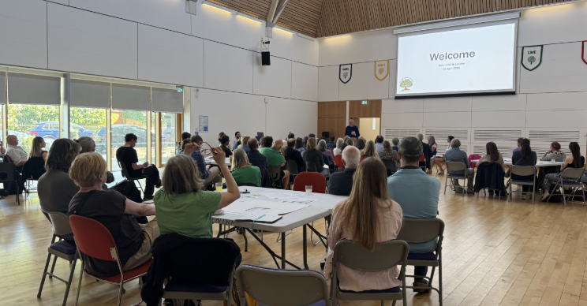
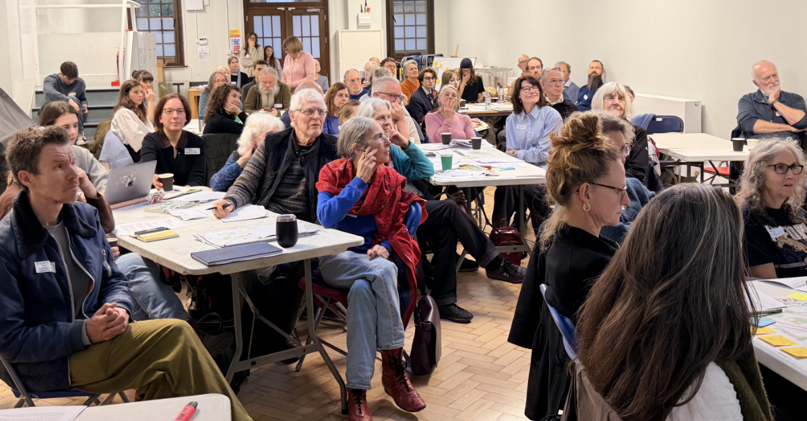
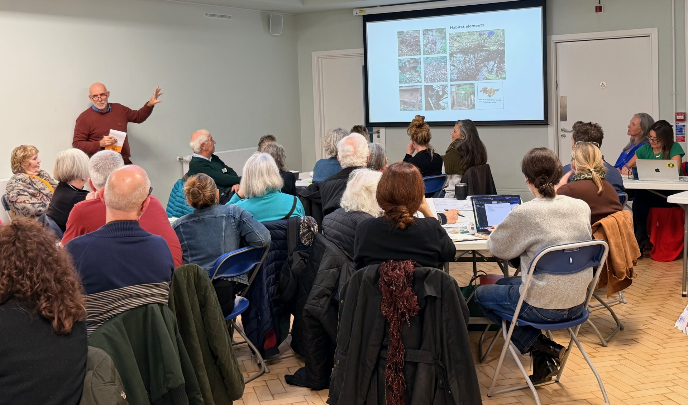
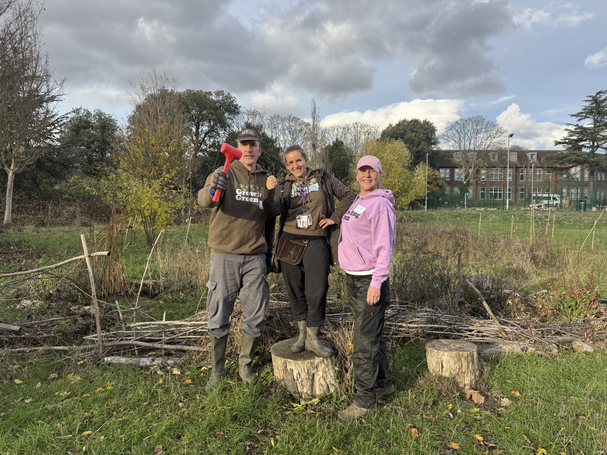

Connecting people and projects
More than 80 people from around 60 organisations gathered at Highgate School to support stronger nature recovery across North London.
 Nature
NatureEvents
Our events create space to share knowledge, map opportunities and turn corridor ideas into collective action.

More than 80 people from around 60 organisations gathered at Highgate School to support stronger nature recovery across North London.

Members shared local knowledge and identified the partnerships, places and actions that can help wildlife move through the city.

Presentations and discussion helped turn practical experience into ideas that can be shared across the network.

Small groups mapped connections, barriers and opportunities for coordinated action around Hampstead Heath and beyond.
Action on the ground
Local volunteers are creating habitats, learning together and restoring green spaces across North London.


Next event
Details of the next Nature North London event will be announced here and through the mailing list.
Join the mailing list